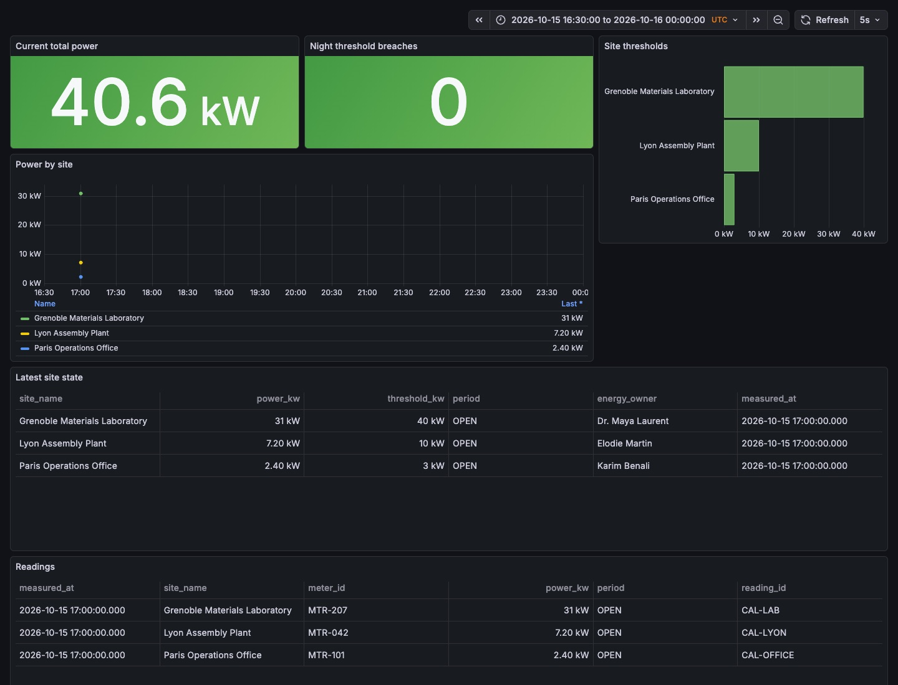
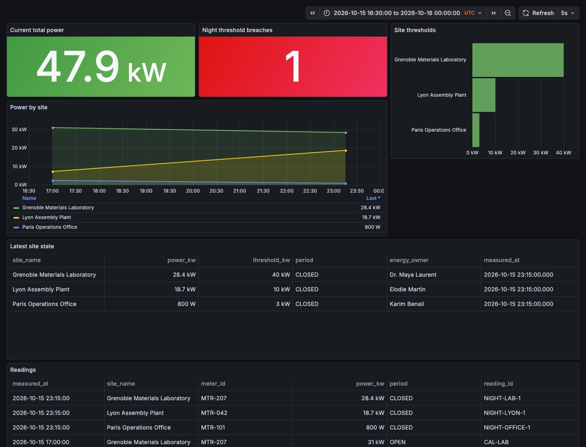

At 23:15, the same number does not mean the same thing everywhere.
Three meters publish their power on Kafka. Lyon draws 18.7 kW, the Grenoble laboratory 28.4 kW. Only Lyon breaks its night threshold: one decision, one email to its owner, and a Grafana dashboard that follows the three states.
apiVersion: connectors.lumnik.io/v1kind: Connectormetadata: name: scenario-energy-sites-n connector_type: csv-file scopes: [energy]spec: transport: kind: local path: /tmp/lumnik-scenario/kafka-after-hours-energy/n/sites.csv parser: has_header: true after_process: noneapiVersion: connectors.lumnik.io/v1kind: Connectormetadata: name: scenario-energy-readings-n connector_type: kafka scopes: [energy]spec: name: scenario_energy_readings_n brokers: host.docker.internal:29094 topic: scenario.energy.n format: json$ lm apply -f manifests/10-sites.yaml
{"name":"scenario-energy-sites-n","connectorId":"208e486a-2905-45f1-8cbb-a79e4c235da5","endpointsApplied":1}
$ lm apply -f manifests/20-meter-readings.yaml
{"name":"scenario-energy-readings-n","connectorId":"5010d2f4-827d-4320-88e5-9b4540e2c8a6","endpointsApplied":1}
$ lm connector run scenario-energy-sites-n
run scheduled: 796959d7-e99b-4465-9a4e-aff681eb1a86
$ lm run get 796959d7-e99b-4465-9a4e-aff681eb1a86
ID CONNECTOR ENDPOINT STATUS IN OUT SKIPPED DEAD-LETTERS STARTED ENDED EVALUATED
796959d7 scenario-energy-sites-n default Completed 3 3 0 0 2026-10-21 23:13 2026-10-21 23:13 no
$ lm connector run scenario-energy-readings-n
run scheduled: f4ff1279-009d-4fc9-aa73-81814dc49ae7
$ lm run get f4ff1279-009d-4fc9-aa73-81814dc49ae7
ID CONNECTOR ENDPOINT STATUS IN OUT SKIPPED DEAD-LETTERS STARTED ENDED EVALUATED
f4ff1279 scenario-energy-readings-n default Completed 3 3 0 0 2026-10-21 23:13 2026-10-21 23:13 no- scenario-energy-sites-n
- IN 3 · OUT 3
- scenario-energy-readings-n
- IN 3 · OUT 3
evidence: replay.log, 04-after-hours-inbox.json, 06-owner-email.json, 08-inbox-after-recovery.json · transform v1
kind: Entityname: ScenarioEnergyReadingNdescription: "A live electricity reading enriched with the site's operating context."match: [reading_id]scopes: [energy]columns: reading_id: { label: "Reading" } meter_id: { label: "Meter" } site_id: { label: "Site code" } site_name: { label: "Site" } power_kw: { label: "Power (kW)" } period: { label: "Operating period" } night_alert_kw: { label: "Night alert threshold (kW)" } energy_owner: { label: "Energy owner" } owner_email: { label: "Owner email" } context: { label: "Operating context" }sources: - table: t_scenario_energy_readings_n map: reading_id: reading_id meter_id: meter_id site_id: site_id measured_at: measured_at power_kw: power_kw period: periodjoins: - table: t_scenario_energy_sites_n from: site_id to: site_id map: site_name: site_name activity: activity night_baseline_kw: night_baseline_kw night_alert_kw: night_alert_kw energy_owner: energy_owner owner_email: owner_email tariff: tariff context: context$ lm entity apply -f manifests/30-enriched-reading.yaml
Applied entity "ScenarioEnergyReadingN" → connector."v_scenarioenergyreadingn"
$ lm entity get ScenarioEnergyReadingN --filter reading_id=CAL-LAB -o json
[
{
"reading_id": "CAL-LAB",
"meter_id": "MTR-207",
"site_id": "SITE-LAB",
"measured_at": "2026-10-15T17:00:00Z",
"power_kw": "31",
"period": "OPEN",
"site_name": "Grenoble Materials Laboratory",
"activity": "Research laboratory",
"night_baseline_kw": "28",
"night_alert_kw": "40",
"energy_owner": "Dr. Maya Laurent",
"owner_email": "maya.laurent@example.test",
"tariff": "Research continuity",
"context": "Climate chambers run continuously overnight",
"_conflicts": "{}"
}
]- ScenarioEnergyReadingN
- v_scenarioenergyreadingn
- CAL-LAB
- 31 kW · Grenoble Materials Laboratory · threshold 40 kW · Dr. Maya Laurent
- grafana
- 3 readings, 40.6 kW, 0 breaches
evidence: replay.log, 04-after-hours-inbox.json, 06-owner-email.json, 08-inbox-after-recovery.json · transform v1

apiVersion: apps.lumnik.io/v1kind: Processmetadata: name: scenario-energy-factory-nspec: scope: energy on: event: data.row.changed table: connector.t_scenario_energy_readings_n when: - site_id=SITE-LYON - period=CLOSED - power_kw>10 emit: type: decision.energy-after-hours-factory-n message: "Meter {meter_id} at {site_id}: {power_kw} kW while the site is closed"apiVersion: apps.lumnik.io/v1kind: Processmetadata: name: scenario-energy-office-nspec: scope: energy on: event: data.row.changed table: connector.t_scenario_energy_readings_n when: - site_id=SITE-OFFICE - period=CLOSED - power_kw>3 emit: type: decision.energy-after-hours-office-n message: "Meter {meter_id} at {site_id}: {power_kw} kW while the office is closed"apiVersion: apps.lumnik.io/v1kind: Processmetadata: name: scenario-energy-laboratory-nspec: scope: energy on: event: data.row.changed table: connector.t_scenario_energy_readings_n when: - site_id=SITE-LAB - period=CLOSED - power_kw>40 emit: type: decision.energy-after-hours-laboratory-n message: "Meter {meter_id} at {site_id}: {power_kw} kW above the laboratory night policy"$ lm process apply -f manifests/40-factory-policy.yaml
{"name":"scenario-energy-factory-n","table":"connector.t_scenario_energy_readings_n","emit":"decision.energy-after-hours-factory-n"}
$ lm process apply -f manifests/41-office-policy.yaml
{"name":"scenario-energy-office-n","table":"connector.t_scenario_energy_readings_n","emit":"decision.energy-after-hours-office-n"}
$ lm process apply -f manifests/42-laboratory-policy.yaml
{"name":"scenario-energy-laboratory-n","table":"connector.t_scenario_energy_readings_n","emit":"decision.energy-after-hours-laboratory-n"}
$ lm notify add --events decision.energy-after-hours-factory-n --to elodie.martin@example.test --template decision-alert
rule 1011: decision.energy-after-hours-factory-n → elodie.martin@example.test- scenario-energy-factory-n
- decision.energy-after-hours-factory-n
- scenario-energy-office-n
- decision.energy-after-hours-office-n
- scenario-energy-laboratory-n
- decision.energy-after-hours-laboratory-n
- notify
- decision.energy-after-hours-factory-n → elodie.martin@example.test
evidence: replay.log, 04-after-hours-inbox.json, 06-owner-email.json, 08-inbox-after-recovery.json · transform v1
$ lm connector run scenario-energy-readings-n
run scheduled: 009822dc-4eed-472b-8663-8792741e08a0
$ lm run get 009822dc-4eed-472b-8663-8792741e08a0
ID CONNECTOR ENDPOINT STATUS IN OUT SKIPPED DEAD-LETTERS STARTED ENDED EVALUATED
009822dc scenario-energy-readings-n default Completed 3 3 0 0 2026-10-21 23:13 2026-10-21 23:13 no
$ lm run get 009822dc-4eed-472b-8663-8792741e08a0 --wait-evaluated --timeout 2m
ID CONNECTOR ENDPOINT STATUS IN OUT SKIPPED DEAD-LETTERS STARTED ENDED EVALUATED
009822dc scenario-energy-readings-n default Completed 3 3 0 0 2026-10-21 23:13 2026-10-21 23:13 yes
$ lm inbox --process scenario-energy-factory-n
ID WHEN PROCESS MESSAGE ENTITY_KEY
17470 just now scenario-energy-factory-n Meter MTR-042 at SITE-LYON: 18.7 kW while the site is closed b1a294e571eeaf064c1234c107674fc26c194a28ed7a08a2258073d0d536fad6- scenario-energy-readings-n
- IN 3 · OUT 3
- EVALUATED
- no → yes
- decisions
- factory 1 · office 0 · laboratory 0
- message
- Meter MTR-042 at SITE-LYON: 18.7 kW while the site is closed
- lumnik event: decision.energy-after-hours-factory-n → elodie.martin@example.test
- grafana
- 6 readings, 47.9 kW, 1 breaches
evidence: replay.log, 04-after-hours-inbox.json, 06-owner-email.json, 08-inbox-after-recovery.json · transform v1

$ lm entity get ScenarioEnergyReadingN --filter reading_id=NIGHT-LAB-1 -o json
[
{
"reading_id": "NIGHT-LAB-1",
"meter_id": "MTR-207",
"site_id": "SITE-LAB",
"measured_at": "2026-10-15T23:15:00Z",
"power_kw": "28.4",
"period": "CLOSED",
"site_name": "Grenoble Materials Laboratory",
"activity": "Research laboratory",
"night_baseline_kw": "28",
"night_alert_kw": "40",
"energy_owner": "Dr. Maya Laurent",
"owner_email": "maya.laurent@example.test",
"tariff": "Research continuity",
"context": "Climate chambers run continuously overnight",
"_conflicts": "{}"
}
]- NIGHT-LAB-1
- 28.4 kW · Grenoble Materials Laboratory · threshold 40 kW · Dr. Maya Laurent
- context
- Climate chambers run continuously overnight
evidence: replay.log, 04-after-hours-inbox.json, 06-owner-email.json, 08-inbox-after-recovery.json · transform v1
$ lm connector run scenario-energy-readings-n
run scheduled: 58bf5d9f-b810-450e-b2a2-cf0bf815c767
$ lm run get 58bf5d9f-b810-450e-b2a2-cf0bf815c767
ID CONNECTOR ENDPOINT STATUS IN OUT SKIPPED DEAD-LETTERS STARTED ENDED EVALUATED
58bf5d9f scenario-energy-readings-n default Completed 1 1 0 0 2026-10-21 23:13 2026-10-21 23:13 no
$ lm run get 58bf5d9f-b810-450e-b2a2-cf0bf815c767 --wait-evaluated --timeout 2m
ID CONNECTOR ENDPOINT STATUS IN OUT SKIPPED DEAD-LETTERS STARTED ENDED EVALUATED
58bf5d9f scenario-energy-readings-n default Completed 1 1 0 0 2026-10-21 23:13 2026-10-21 23:13 yes
$ lm inbox --process scenario-energy-factory-n
ID WHEN PROCESS MESSAGE ENTITY_KEY
17470 just now scenario-energy-factory-n Meter MTR-042 at SITE-LYON: 18.7 kW while the site is closed b1a294e571eeaf064c1234c107674fc26c194a28ed7a08a2258073d0d536fad6- scenario-energy-readings-n
- IN 1 · OUT 1
- EVALUATED
- no → yes
- decisions
- factory 1 · office 0 · laboratory 0
- message
- Meter MTR-042 at SITE-LYON: 18.7 kW while the site is closed
- grafana
- 7 readings, 33.1 kW, 0 breaches
evidence: replay.log, 04-after-hours-inbox.json, 06-owner-email.json, 08-inbox-after-recovery.json · transform v1

Limits
- A policy sees only the Kafka reading's columns: the owner and context from the CSV cannot enter the decision message in v1.
- The recipient is a static rule for this decision type; lumnik does not read the address from the entity.
- lumnik compares a measurement with a declared threshold; it does not diagnose the cause. period=CLOSED comes from the source.
- Grafana queries postgres every 5 seconds; this is not streaming.
- Synthetic data.
This scenario needs lumnik Pro.
See the editions →